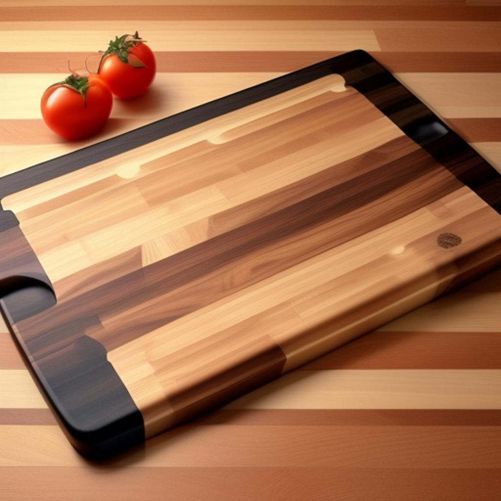

Experience the epitome of culinary elegance with our exclusive range of cutting boards, meticulously crafted to enhance your kitchen endeavors. Each board, whether it's the playful round design with its unique central graphic or the sophisticated checkered masterpiece, speaks volumes about craftsmanship and style. Not to be outdone, our large wooden board, engraved with a signature mark, promises durability while adding a touch of opulence to your countertop. At Chop Chronicles, we stand by the quality and finesse of our products. Our cutting boards are not just functional tools but statement pieces that reflect the tastes of discerning chefs and home cooks alike. We understand the importance of trust in every purchase. That's why we're proud to offer a 100% satisfaction guarantee on this weekly sales collection. If, for any reason, you find the product doesn't meet your expectations, simply return it for a full refund or exchange. Dive into a world where functionality meets artistry, and allow us to be a part of your culinary journey.
Product of the Week
Introducing our top-rated chopping board, known for its durability and aesthetic appeal. Perfect for every kitchen!
-
High-Quality Craftsmanship:
Made with the finest materials, this board showcases impeccable woodwork and a beautiful blend of natural tones.
-
Elegant Design:
The combination of multiple wooden hues and a sleek, polished finish ensures this board will be the centerpiece of any kitchen.
-
Functional and Durable:
Not only pleasing to the eye, its robust construction guarantees longevity, resisting wear and tear from daily use.
-
Added Features:
The unique cut-out handles and non-slip edges enhance usability, ensuring safety and convenience during food preparation.
Weekly sales
Round Cutting Board with Graphic Design
-
Features a central graphic of a character with a crown, making it a unique and playful addition to any kitchen.
-
Designed with built-in knife slots, which can be handy for immediate use or storage.
-
Its round shape can be useful for certain cutting tasks and as a serving board.
-
The light wood complements the white graphic, adding a touch of sophistication.
Rectangular Checkered Cutting Board
-
Checkered pattern enhances its aesthetic appeal and indicates a combination of different woods.
-
The sleek design suggests it's perfect for modern kitchens.
-
Can double up as a serving tray due to its smooth, flat surface.
-
The shades of wood give it versatility in matching various kitchen decors.
Large Wooden Cutting Board with Grooves
-
Features an engraved brand or signature, suggesting premium quality.
-
Grooves around the edges can help collect juice and crumbs, making it ideal for carving meats or cutting juicy fruits.
-
Varied wood shades create a rich, warm aesthetic.
-
Its sizable surface area is suitable for handling large food quantities.